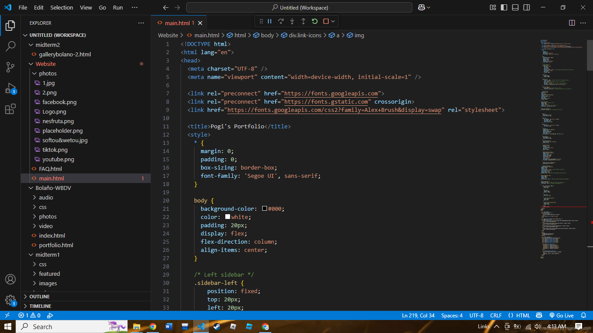

The rest of my name - Mark, Dustin and Bolaño, also holds an interesting definition. The name Mark, derived from Marcus, is deeply rooted in ancient mythological significance, symbolizing Mars, the Roman God of War. Mars, not only revered as the embodiment of strength and aggression, was also the guardian of soldiers and a symbol of the fierce spirit of battle. As the father of Romulus and Remus, the legendary founders of Rome, Mars is intricately tied to the very origins of civilization and conquest. In Greek mythology, Mars' counterpart, Ares, mirrored his role, representing the brutal, chaotic nature of war, a force that shaped both gods and mortals alike. Thus, the name Mark carries with it an essence of warrior spirit, resilience, and an unwavering connection to the primal forces of combat and valor.
The name Dustin, derived from Thorstien, carries the legacy of Thor, the Norse God of Thunder. Thor, revered for his immense strength and his hammer Mjölnir, symbolizes resilience, courage, and the ability to overcome adversity. But Thor's Stone also refers to a natural rock formation—a tangible, enduring feature of the earth itself. Much like these stone formations that have withstood the tests of time, the name Dustin connects to the steadfast strength of nature, embodying both physical power and the inner fortitude to face life’s storms. It speaks to the power within to endure, to stand firm, and to navigate challenges with the same enduring presence that a rock formation holds against the elements.
The surname Bolaño holds a vivid and dynamic history, derived from the word meaning cannonballs—weapons once essential to infantry and maritime battles, especially among buccaneers and privateers who roamed the seas during the age of exploration and conquest. This origin ties the name to a legacy of explosive power, strategic warfare, and the rugged spirit of adventure. It evokes images of thundering battleships, fearless warriors, and the bold resilience of those who lived by the wind and the flame of rebellion.
Beyond its martial roots, Bolaño also resonates in the literary world through the renowned Chilean novelist Roberto Bolaño, whose works explore themes of exile, resistance, and the search for meaning in a chaotic world. His raw, poetic voice gave the name a new kind of power—one grounded not in physical warfare, but in intellectual and emotional battles. Together, these meanings shape Bolaño into a name that bridges both fire and thought—strength in battle, and depth in storytelling.
I began my academic journey at Maligaya Elementary School, where I laid the foundation for my early education. Continuing in the same environment, I progressed to Maligaya High School, building on my skills and deepening my curiosity for learning. For Senior High School, I transitioned to Divine Grace School, where I was exposed to a more refined academic atmosphere and further honed my interests and ambitions. My pursuit of higher education led me to Our Lady of Fatima University (OLFU), a place that shaped both my intellectual growth and personal development. Each stage of my education has played a key role in shaping who I am today—curious, driven, and always seeking growth through knowledge and experience.
Looking back on both my name and my journey, I’ve come to understand how deeply identity is woven from both heritage and experience. I explored the meanings behind Mark, Dustin, and Bolaño—names rooted in mythology, power, and legacy. Each part carries a symbolic weight: the warrior spirit of Mars, the unshakable strength of Thor, the explosive force and literary resonance of Bolaño. These are not just historical or mythical references—they represent ideals I strive to embody in my own life.
This chapter also revealed how those ideals began to take shape in the real world. From my earliest days at Maligaya Elementary to my time at OLFU, my education has been more than a series of classrooms and exams. It has been a journey of becoming—learning how to think, how to grow, and how to carry the meaning of my name not just as a label, but as a guide. Together, these chapters remind me that who I am is both inherited and earned. My name gives me roots; my path gives me wings.
In creating my portfolio, I initially aimed for a single HTML layout with sticky transitions, but found the technical execution too complex as a beginner. Instead, I adapted by splitting the site into two HTML files—one for the header and one for the main content. This decision allowed me to simplify the process while still achieving a clean, functional design, and reminded me that flexibility is key in both coding and creativity.
This shift in approach taught me something valuable: sometimes, adjusting the plan is part of the process. It wasn’t about downgrading my vision—it was about working with my current skillset while still moving forward. Separating the files allowed me to keep control over the structure and avoid unnecessary technical complications, while still creating something I could be proud of. It may not have been the original plan, but the result is a functional, meaningful representation of my journey—and just like everything else I’ve built so far, it’s a stepping stone toward something even better.
Every creative project has a source of inspiration—and for my portfolio website, that spark came from an unexpected place: the world of One Piece, the iconic Japanese manga series created by Eiichiro Oda. While exploring various designs for anime-related content, I stumbled upon a fan-made website dedicated to One Piece. It was filled with vivid imagery, detailed lore, organized character lists, and a strong visual theme that captured the spirit of the series. I was immediately drawn to how the site balanced creativity with structure—presenting a rich, adventurous universe in a digital format that felt both alive and immersive.
I decided to use that site as a reference point for my own work. I didn’t intend to copy it entirely, but rather to learn from its design philosophy—its layout, navigation flow, color choices, and thematic consistency. I was particularly inspired by how it carried the essence of the story it was based on, and I wanted to achieve something similar with my own personal touch.
However, bringing that level of design into reality was far from easy. As someone still learning the ropes of web development, replicating those aesthetics and functions presented a real challenge. I ran into technical limitations and design inconsistencies that often pushed me to rethink and adapt my work. The final output ended up looking quite different from the original reference—but in many ways, that became a strength.
In the end, the reference served not as a blueprint, but as a compass—guiding me, not defining me.
One Piece Web Layout 1One Piece Web Layout 2
This Images shows the layout of the website i based my layout with.
Zen for Chapter 3
Looking back on the skills I’ve acquired, I realize how each one plays a unique role in shaping the way I think, create, and solve problems. What began as scattered interests—dabbling in web design, trying out programming, sketching ideas—have gradually formed into a toolkit that helps me express myself in many different ways.
Learning HTML and CSS taught me how to bring structure to creativity. C programming taught me the importance of logic and precision. Game design nurtured my ability to build systems and experiences, while creative writing helped me bring emotion and meaning into those systems. And through art, I discovered how to visualize ideas in a way that words or code alone couldn’t capture.
These skills aren’t just lines on a resume—they’re milestones in my personal and creative development. I’ve made mistakes, hit roadblocks, and doubted myself many times. But through it all, I kept learning, kept experimenting, and most importantly, kept building.
Each new project, each challenge, and each success—even the small ones—has brought me closer to understanding not just how to make things, but why I want to make them. It’s not about mastering everything at once. It’s about growing piece by piece, turning curiosity into capability. And that’s something I carry with me, no matter where the next chapter leads.
Zen for Chapter 4
Chapter Four highlights my journey through hands-on learning, beginning with several unfinished personal game projects that, while incomplete, taught me valuable lessons in design and coding. My work immersion with the Red Cross provided real-world experience and strengthened my communication and adaptability. I’ve also grown through both solo and collaborative coding, learning to balance independence with teamwork. Finally, receiving a Very Satisfactory Award recognized my dedication to learning. Altogether, these experiences reflect my ongoing growth and willingness to learn—even when the path isn’t perfect.
In all of these experiences—whether coding alone at midnight, helping out during Red Cross duties, or working through class assignments—one thing remains clear: growth isn’t always about perfection or completion. Sometimes, it’s about starting, trying, and learning along the way. Even unfinished work holds value, because it means I dared to begin.
And that, to me, is where real experience begins.
Work besides WBDV
INPRAPPROVAL
Certification
Very Satisfactory Medal - FrontVery Satisfactory Medal - Back
Zenless is the name given to the page that holds everything that pulses beneath the surface of this website. While the Zen portals are made to be tranquil—simple, open, and calming—Zenless represents the exact opposite: the space of restlessness, where ideas were born, challenged, broken, and reshaped.
The word "Zenless" is drawn from restless—the creative tension that drives any meaningful work forward. It speaks to long hours of experimentation, the frustration of things not working as planned, and the stubborn persistence to keep going anyway. This is where structure was carved from chaos—through trial and error, through doubt and discovery.
Zenless is the workshop, the lab, the battlefield. It's where lines of code collided with design concepts, where aesthetics had to meet functionality, and where ideas were either refined or abandoned. It holds the skeletons of old drafts, the evolution of concepts, and the continuous polishing that led to the final form of this website.
Yet Zenless isn't just about struggle—it's about motion. It's the unquiet mind chasing improvement, the heartbeat of creative energy. It honors the reality that even behind the most peaceful user experience is a restless maker, always building, always reaching.
The Hall of Zenless (man without rest)
//please zoom to view each items
Mockup of the WebsiteMockup of the Website

Coding for Website
First Look of the WebsiteFirst Look of the WebsiteFirst Look of the Contacts
Prototype for the WebsitePrototype for the Website
In the vastness of creation, black represents the void, the unknown, the infinite potential from which all things emerge. It is the canvas of the universe before the first star ignited. It symbolizes depth, introspection, and the mysteries we have yet to uncover. Against this endless dark, white becomes illumination—clarity, knowledge, truth. The white text is not just information; it is light cutting through the dark, ideas born from silence, expression emerging from stillness. This contrast reflects the nature of human thought. We begin in ignorance (black), and through curiosity and learning, we form understanding (white). To read white text on black is to witness meaning rising from emptiness—a metaphor for creation, for thinking, for growth. It’s also a quiet rebellion. Most pages in life are white with black ink—traditional, expected, known. But inverting this says: I see things differently. I start from the unknown and move toward understanding. It’s minimalist, yet profound—a subtle reminder that even in darkness, there is always something to discover.
2.) Why use Deer Skull with Target Background as Logo?
The deer symbolizes the dream: graceful, free, and always moving ahead—something we admire from a distance, something we long to reach. But the deer skull tells a different story. It is not a symbol of death, but of achievement. It represents the dream already chased, already caught, already transformed into reality. A goal no longer imagined, but realized. The deer, once a symbol of pursuit, becomes a testament to the effort, perseverance, and dedication that made the dream possible. The target behind it completes the meaning. It reflects intention, purpose, and direction—a constant reminder that no dream is achieved by chance. One must aim, focus, and take the shot. You don’t stumble into your aspirations—you work for them, you chase them down, and when the moment comes, you’re ready.
3.) What are Zen and Zenless mode?
The naming of the "Zen" portals in this website is intentional—rooted in the dual meaning of the word "rest." On one hand, Zen refers to a state of calmness and clarity—a place where the mind can relax and focus. On the other hand, "rest" can also mean the remainder—as in, "the rest of the content" or "the rest of the story." Each Zen portal serves as a deeper, wider, and more bigger extension of its main navigation section. These spaces are designed to feel open and reflective, inviting users to explore without the clutter, to take in more information at their own pace, and to enjoy the journey rather than rush through it. In contrast, "Zenless"—a deliberate play on the word "restless"—represents the complete opposite. While Zen is a sanctuary of stillness, Zenless is the engine room of the site. It’s where the movement happens. This page is devoted to the behind-the-scenes efforts, the constant creation, experimentation, trial, and revision that brought the website to life. It reflects the work, the chaos, and the persistence that exists behind any polished design. Where Zen invites rest, Zenless honors the restlessness required to build something meaningful.
Contact Me
If you have any questions or project inquiries, feel free to send me a message.